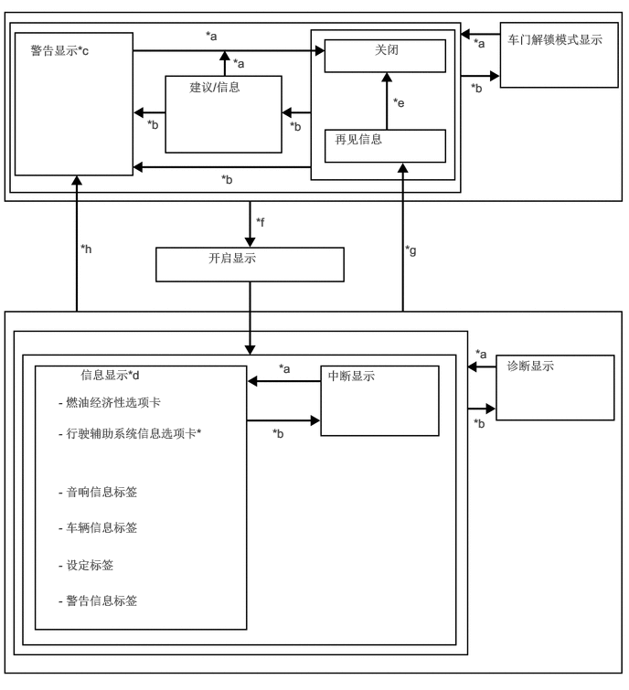
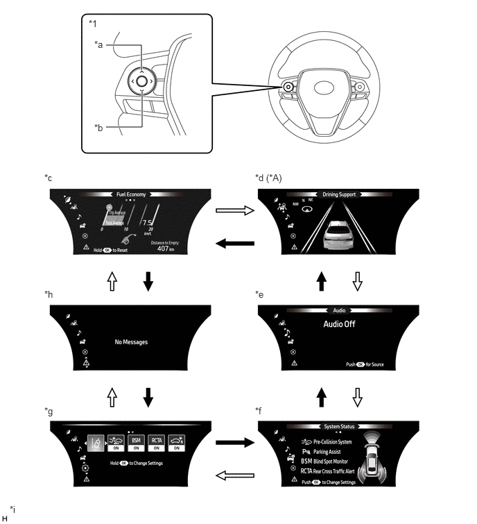
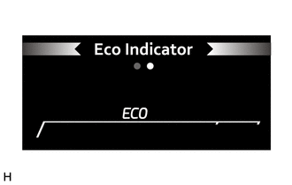
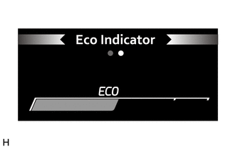
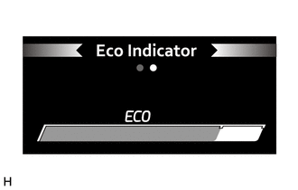
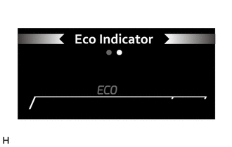

仪表/显示屏 仪表系统 详情 组合仪表
功能
蜂鸣器
下表列出了组合仪表总成内的蜂鸣器的警告和提醒功能。
|
*1：HV 车型 *2：汽油车型 |
|
| 优先顺序 | 项目 |
| 1 | 就绪*1 |
| 2 | 倒车警告 |
| 3 | 碰撞预测系统警告 |
| 4 | P 位置选择建议 |
| 5 | 行驶期间的发动机开关操作警告*2 |
| 6 | 行驶期间的电源开关操作警告*1 |
| 7 | 座椅安全带警告（2 级） |
| 8 | 后排座椅安全带警告 |
| 9 | 座椅安全带警告（1 级） |
| 10 | 车辆接近警告 |
| 11 | 行人警告/车距时间警告 |
| 12 | 车道偏离警示系统取消警告 |
| 13 | 车辆意外移动警告（1 级） |
| 14 | 车辆意外移动警告（2 级） |
| 15 | 制动力减小警告*1 |
| 16 | 制动液液位低警告 |
| 17 | 发动机机油压力警告 |
| 18 | EPS 警告（1 次） |
| 19 | EPS 警告（间歇） |
| 20 | 车道偏离警示系统警告 |
| 21 | 发动机冷却液温度警告 |
| 22 | 换档杆未置于 P 时车门未关警告 |
| 23 | 启停系统警告*2 |
| 24 | 智能钥匙系统警告（间歇 1） |
| 25 | 制动系统温度警告/主动测试*1 |
| 26 | 制动系统温度警告*1 |
| 27 | 智能钥匙系统警告（间歇 2）（最多 9 次） |
| 28 | 智能钥匙系统警告（一次） |
| 29 | 多信息显示屏警告 |
| 30 | 换档杆置于 N 位置时，踩下加速踏板*1 |
| 31 | 加速踏板持续踩下警告*1 |
| 32 | 混合动力系统警告（间歇 1）*1 |
| 33 | 混合动力系统警告（间歇 2）*1 |
| 34 | 混合动力系统警告（间歇 3）*1 |
| 35 | 混合动力系统警告（间歇 4）*1 |
| 36 | 混合动力系统警告（持续）*1 |
| 37 | 混合动力系统警告（一次）*1 |
| 38 | 禁止牵引通知*1 |
| 39 | 混合动力蓄电池电量低警告（持续）*1 |
| 40 | 混合动力蓄电池电量低警告（间歇）*1 |
| 41 | 混合动力单元过热警告*1 |
| 42 | 电动驻车制动系统取消警告 |
| 43 | 制动保持系统控制未解除警告 |
| 44 | 由于低速而取消动态雷达巡航控制的警告 |
| 45 | 停机系统认证提醒 |
| 46 | HV 蓄电池诊断请求通知*1 |
| 47 | 驻车制动器接合警告 |
| 48 | 行驶时车门未关警告 |
| 49 | 车辆摇摆警告 |
| 50 | 运动档拒绝警告 |
| 51 | EV 行驶模式拒绝警告*1 |
| 52 | 车灯提醒 |
| 53 | PBA 通知 |
| 54 | ALM 通知 |
| 55 | 制动检查备用模式通知 |
| 56 | 雷达波束轴调节完成通知 |
| 57 | 摄像机波束轴调节完成通知 |
| 58 | FPB/PB 通知/从制动检查模式返回通知/雷达波束轴调节未完成通知/摄像机调节开始通知 |
| 59 | 转向信号/危险警告操作 |
多信息显示屏
显示功能流程图
可按下列流程图所示切换多信息显示屏显示：

*：带动态雷达巡航控制系统的车型
|
*1：汽油车型 *2：HV 车型 |
|
| *a | 未满足条件。 |
| *b | 满足条件。 |
| *c | 如果有多个显示请求，则将依次显示项目。 |
| *d | 通过操作方向盘装饰盖开关总成以选择项目或显示。 |
| *e | 发动机开关*1 或电源开关*2 置于 OFF 位置后，里程表显示内容会显示一定的时间。 |
| *f | 将发动机开关*1 或电源开关*2 从 OFF 位置切换至 ON (IG) 位置。 |
| *g | 将发动机开关*1 或电源开关*2 从 ON (IG) 位置切换至 OFF 位置（未满足条件）。 |
| *h | 将发动机开关*1 或电源开关*2 从 ON (IG) 位置切换至 OFF 位置（满足条件）。 |
显示标签操作
可使用方向盘装饰盖开关总成上的向上/向下开关切换当前显示的信息。

| *A | 带动态雷达巡航控制系统的车型 | - | - |
| *1 | 方向盘装饰盖开关总成 | - | - |
| *a | 向上开关 | *b | 向下开关 |
| *c | 燃油经济性选项卡 | *d | 行驶辅助系统信息选项卡 |
| *e | 音响信息选项卡 | *f | 车辆信息选项卡 |
| *g | 设定选项卡 | *h | 警告信息选项卡 |
| *i | 所示插图仅为示例。 | - | - |

|
向下开关操作 | 
|
向上开关操作 |
设定功能
可以对多信息显示屏上显示的项目进行定制。
可在信息设定画面上选择以下项目。
| 项目 | 可用设置 | |
|---|---|---|
| 更改设定 | 转向辅助 | LDA 转向辅助 ON/OFF： ·
ON ·
OFF |
| 灵敏度 | 更改 LDA 灵敏度： ·
高 ·
正常 |
|
| 车辆摇摆警告 | 更改摇摆警告： ·
ON ·
OFF |
|
| 车辆摇摆灵敏度 | 更改摇摆警告灵敏度： ·
高 ·
正常 ·
低 |
|
| 项目 | 可用设置 | |
|---|---|---|
| 功能 | 碰撞预测系统 ON/OFF： ·
ON ·
OFF |
|
| 更改设定 | 灵敏度 | 更改碰撞预测系统灵敏度： ·
远（显示图标） ·
中（显示图标） ·
近（显示图标） |
| 项目 | 可用设置 | |
|---|---|---|
| 功能 | 盲区监视器 ON/OFF： ·
ON ·
OFF |
|
| 更改设定 | 亮度 | BSM 亮度调节： ·
亮 ·
暗 |
| 项目 | 可用设置 | |
|---|---|---|
| 功能 | RCTA ON/OFF： ·
ON ·
OFF |
|
| 更改设定 | 音量 | RCTA 音量调节： ·
1（低） ·
2（中音量） ·
3（大音量） |
| 项目 | 可用设置 | |
|---|---|---|
| 功能 | 驻车辅助 ON/OFF： ·
ON ·
OFF |
|
| 更改设定 | 音量 | 驻车辅助警报音量： ·
1 ·
2 ·
3 |
| 项目 | 可用设置 | |
|---|---|---|
|
*1：HV 车型 *2：汽油车型 *3：带导航系统的车型 |
||
| 功能 | HUD ON/OFF： ·
ON ·
OFF |
|
| 更改设定 | HUD 亮度/位置 | ·
可更改显示屏的亮度和位置。 ·
更改 HUD 图像的亮度时，按下方向盘装饰盖开关总成上的向左或向右开关。 ·
更改 HUD 图像的位置时，按下方向盘装饰盖开关总成上的向上或向下开关。 |
| HUD 行驶辅助 | ·
转速表设定 ·
空白 ·
混合动力系统*1 ·
ECO 指示灯*2 ·
转速表 ·
可将以下项目设定为 ON/OFF： ·
导航*3 ·
车道*3 ·
行驶辅助 ·
指南针*3 ·
音响 |
|
| HUD 旋转 | ·
可更改 HUD 图像的倾角。 ·
逆时针更改 HUD 图像倾角时，按下方向盘装饰盖开关总成上的向左开关。 ·
顺时针更改 HUD 图像倾角时，按下方向盘装饰盖开关总成上的向右开关。 |
|
| 项目 | 可用设置 | |
|---|---|---|
|
*：带启停系统的车型 |
||
| 启停系统* | ·
空调打开时更改启停持续时间 ·
标准 ·
延长 |
|
| TPWS | 设定压力 | 可初始化 TPWS。 |
| 更改车轮 | 可选择轮胎压力警告系统 ID 并且执行自动 ID 注册。 | |
| 项目 | 可用设置 |
|---|---|
|
*1：汽油车型 *2：HV 车型 *3：带启停系统的车型 *4：带导航系统的车型 |
|
| 语言 | 可选择多信息显示屏上使用的语言： ·
简体中文 ·
美式英语 |
| 单位 | 可选择多信息显示屏上显示的单位。 ·
km (L/100 km) ·
km (km/L) |
| 环保驾驶指示灯*1 | 环保驾驶指示灯 ON/OFF： ·
ON ·
OFF |
| EV 指示灯*2 | EV 指示灯 ON/OFF： ·
ON ·
OFF |
| 数字车速 | 数字车速 ON/OFF： ·
ON ·
OFF |
| 配件内容 | 选择配件： ·
无显示 ·
平均车速 ·
行驶距离 ·
总时间 |
| 燃油经济类型 | 选择燃油经济类型： ·
起动后 ·
重置后 ·
加油后 |
| 重置*3 | 重置启停？ ·
是 ·
否 |
| 选择节省时间/燃油*3 | 选择显示启停时间/节省燃油 ·
启停时间 ·
节省的燃油 |
| 多信息显示屏关闭 | 多信息显示屏关闭。 |
| 中断显示 | 可将满足设定条件后出现的下列显示内容设定为 ON/OFF： ·
逐向道路导航*4 ·
来电显示 ·
启停系统持续时间*3 ·
启停系统状态*3 ·
亮度 |
| 初始化 | 可对设定项目进行初始化。 |
警告模式功能
如果需要发出警告，则警告显示将中断多信息显示屏上的显示。
根据多信息显示屏显示项目的不同，主警告灯将会点亮或闪烁，且组合仪表总成内的蜂鸣器可能会鸣响。
| 优先顺序 | 显示 | 主警告灯 | 蜂鸣器 |
|---|---|---|---|
|
*1：带无级变速传动桥的车型 *2：如果车速达到 5 km/h *3：带丰田驻车辅助传感器系统的车型 *4：带盲区监视系统的车型 |
|||
| 1 | CDY-2 | - | - |
| RES-1 | - | - | |
| RES-2 | - | - | |
| RESOLVER-1 NOT ADJUSTED（解析器 1 未调节） | - | - | |
| RESOLVER-2 NOT ADJUSTED（解析器 2 未调节） | - | - | |
| 2 | Brake!（制动！） | - | 鸣响 |
| 动态雷达巡航控制指示灯（图像显示） | - | - | |
| 3 | Power Steering Malfunction Steering Power Low Visit Your Dealer（动力转向故障转向动力小，请前往经销店） | 闪烁/点亮 | 鸣响 |
| 4 | Engine Stopped Shift Into P（发动机停机并将换档杆置于 P） | 点亮 | 鸣响 |
| Shift to N and Turn Engine Switch to Restart（将换档杆置于 N 并转动发动机开关以重新起动） | 闪烁 | - | |
| Parking Brake Unavailable Vehicle May Roll Park on Flat Road（驻车制动不可用，车辆可能溜车，将车辆停驻在平坦路面） | 闪烁 | 鸣响 | |
| Transmission Oil Temp. High Stop in a safe place and See owner's manual*1（变速器油温度高，停在安全位置并参考《用户手册》*1） | 闪烁 | 鸣响 | |
| Engine Stopped Stop in a Safe Place（发动机停机并将车辆停放在安全位置） | 闪烁 | 鸣响/- | |
| Shift to P Before Exiting Vehicle（下车前将换档杆置于 P） | 闪烁 | 鸣响 | |
| Engine Coolant Temp High Stop in a Safe Place See Owner's Manual（发动机冷却液温度高，将车辆停放在安全位置，请参阅《用户手册》） | 点亮 | 鸣响 | |
| Charging System Malfunction Stop in a Safe Place See Owner's Manual（充电系统故障，将车辆停放在安全位置并参考《用户手册》） | 点亮 | - | |
| Oil Pressure Low Stop in a Safe Place See Owner's Manual（机油压力低，将车辆停放在安全位置，请参阅《用户手册》） | 点亮 | 鸣响 | |
| Steering Power Low Visit Your Dealer（转向动力小，请前往经销店） | 点亮 | 鸣响 | |
| Push and Hold Engine Switch for Emergency Stop（按住发动机开关以紧急停止） | 闪烁 | 鸣响 | |
| Low Braking Power Stop in a Safe Place See Owner's Manual（制动力小，将车辆停放在安全位置并参考《用户手册》） | 闪烁 | 鸣响 | |
| Release Accelerator（松开加速踏板） | 闪烁 | 鸣响 | |
| Secondary Collision Brake system Malfunction Visit Your Dealer（二次碰撞制动系统故障，请前往经销店） | 点亮 | 鸣响 | |
| Accelerator and Brake Pedals Depressed Simultaneously（同时踩下加速踏板和制动踏板） | 闪烁 | - | |
| 5 | Radar Cruise Control Unavailable Press Brake to Resume Driving（雷达巡航控制不可用，踩下制动踏板以恢复驾驶） | - | - |
| Cruise Control Malfunction Visit Your Dealer（巡航控制故障，请前往经销店） | 点亮 | 鸣响 | |
| 车门未关（行驶时）（图像显示）*2 | 闪烁 | 鸣响 | |
| 车门未关（停止时）（图像显示） | - | - | |
| Would You Like to Take A Break?（您是否需要休息？） | - | 鸣响 | |
| Please Take a Break（请休息一下） | - | 鸣响 | |
| Steering Power Low Visit Your Dealer（转向动力小，请前往经销店） | 闪烁 | 鸣响 | |
| Power Steering Malfunction Visit Your Dealer（动力转向故障，请前往经销店） | 点亮 | 鸣响 | |
| 6 | Headlight System Uninitialized Visit Your Dealer（前照灯系统未初始化，请前往经销店） | - | - |
| Parking Brake Unavailable（驻车制动不可用） | 闪烁 | 鸣响 | |
| Radar Cruise Control Unavailable（雷达巡航控制不可用） | 点亮 | 鸣响 | |
| Cruise Control Fault Press Brake to Deactivate Visit Your Dealer（巡航控制故障，踩下制动踏板以解除，请前往经销店） | 点亮 | 鸣响 | |
| Front Camera Unavailable Remove Debris On Windshield（前摄像机不可用，清除挡风玻璃上的碎屑） | - | - | |
| LDA Unavailable Below Approx. 50km/h（低于约 50 km/h 时 LDA 不可用） | - | - | |
| LDA Unavailable Below Approx. 32MPH（低于约 32MPH 时 LDA 不可用） | - | - | |
| LDA Unavailable at Current Speed（当前车速下 LDA 不可用） | - | - | |
| Check Fuel Cap（检查燃油箱盖） | - | 鸣响 | |
| LDA Hold Steering Wheel（LDA 固定方向盘） | - | - | |
| LDA Steering Assist Unavailable Hold Steering Wheel（LDA 转向辅助不可用，握住方向盘） | 点亮 | - | |
| SRS Airbag System Malfunction Visit Your Dealer（SRS 空气囊系统故障，请前往经销店） | 点亮 | 鸣响 | |
| LDA Malfunction Visit Your Dealer（LDA 故障，请前往经销店） | 点亮 | 鸣响 | |
| Front Camera Unavailable（前摄像机不可用） | - | - | |
| 动态雷达巡航控制指示灯（图像显示） | - | - | |
| Headlight System Malfunction Visit Your Dealer（前照灯系统故障，请前往经销店） | 点亮 | 鸣响 | |
| Engine Stopped Steering Power Low（发动机停机，转向动力小） | 点亮 | 鸣响 | |
| CHECKING CRUISE CONTROL BRAKE（检查巡航控制制动） | - | - | |
| Parking Brake Unavailable（驻车制动不可用） | 点亮 | 鸣响 | |
| Release Parking Brake（解除驻车制动） | 闪烁 | 鸣响 | |
| Antilock Brake System Malfunction Visit Your Dealer（防抱死制动系统故障，请前往经销店） | - | 鸣响 | |
| 7 | Check Engine Visit Your Dealer（检查发动机，请前往经销店） | 点亮 | - |
| Check Engine Reduced Engine Power Visit Your Dealer（检查发动机，发动机功率下降，请前往经销店） | 点亮 | - | |
| Reduced Engine Power Visit Your Dealer（发动机功率下降，请前往经销店） | 点亮 | - | |
| Radar Cruise Control Unavailable Clean Sensor（雷达巡航控制不可用，清洁传感器） | 点亮 | 鸣响 | |
| Stop & Start System Malfunction Visit Your Dealer（启停系统故障，请前往经销店） | 点亮 | 鸣响 | |
| Fuel Low（燃油油位低） | - | - | |
| Traction Control Turned Off（牵引力控制关闭） | - | - | |
| Smart Key System Malfunction See Owner's Manual（智能钥匙系统故障，请参阅《用户手册》） | 点亮 | 鸣响 | |
| Vehicle May Roll Shift to P（车辆可能侧翻，将换档杆置于 P） | 闪烁 | 鸣响 | |
| EPB Automatically Applied（自动施加 EPB） | 闪烁 | 鸣响 | |
| Parking Brake Temporarily Unavailable（驻车制动暂时不可用） | 闪烁 | - | |
| Brakehold Malfunction Press Brake to Deactivate Visit Your Dealer（制动保持故障，踩下制动踏板以解除，请前往经销店） | 点亮 | 鸣响 | |
| Brakehold Warning Press Brake on Slope（制动保持警告，在斜坡上踩下制动踏板） | 闪烁 | 鸣响 | |
| Pre-Collision System Malfunction Visit Your Dealer（碰撞预测系统故障，请前往经销店） | 点亮 | 鸣响 | |
| Parking Brake Malfunction Visit Your Dealer（驻车制动器故障，请前往经销店） | 点亮 | 鸣响 | |
| Brakehold Malfunction Visit Your Dealer（制动保持故障，请前往经销店） | 点亮 | 鸣响 | |
| Brakehold Less Effective During Icy Conditions（在结冰路面上行驶时，制动保持效用低） | 点亮 | - | |
| VSC Turned Off Pre-Collision Brake System Unavailable（VSC 关闭，碰撞预测制动系统不可用） | - | - | |
| Pre-Collision System Unavailable（碰撞预测系统不可用） | - | - | |
| Pre-Collision System Unavailable Clean Sensor（碰撞预测系统不可用，清洁传感器） | - | - | |
| 8 | EPB Shift Interlock Function Activated（EPB 换档互锁功能激活） | - | 鸣响 |
| EPB Shift Interlock Function Deactivated（EPB 换档互锁功能关闭） | - | - | |
| Shift to N and Push ENGINE Switch to Restart（换至 N 并按下发动机开关以重新起动） | 闪烁 | 鸣响 | |
| 侦测声纳检测（图像显示）*3 | - | - | |
| Parking Assist Malfunction Visit Your Dealer（驻车辅助故障，请前往经销店）*3 | 点亮 | 鸣响 | |
| Parking Assist Unavailable Please Clean Parking Assist Sensor（驻车辅助不可用，请清洁驻车辅助传感器）*3 | 点亮 | 鸣响 | |
| Parking Assist Unavailable（驻车辅助不可用）*3 | 点亮 | 鸣响 | |
| Rear Cross Traffic Alert Malfunction Visit Your Dealer（倒车侧后方盲点警示故障，请联系经销店）*4 | 点亮 | 鸣响 | |
| Rear Cross Traffic Alert Unavailable（倒车侧后方盲点警示不可用）*4 | 点亮 | 鸣响 | |
| Engine Stopped Press brake firmly to restart（发动机停止，用力踩下制动踏板以重新起动） | 点亮 | 鸣响 | |
| Parking Brake Unable to Disengage Press Brake and Push Parking Brake Switch to Release（无法解除驻车制动，踩下制动踏板并按下驻车制动开关以解除） | 闪烁 | 鸣响 | |
| Parking Brake Unable to Disengage Close Door and Fasten Seat Belt（无法解除驻车制动，关闭车门并系紧座椅安全带） | 闪烁 | 鸣响 | |
| Parking Brake ON（驻车制动器 ON） | 闪烁 | 鸣响 | |
| Wiper System Malfunction Visit Your Dealer（刮水器系统故障，请前往经销店） | 点亮 | 鸣响 | |
| Key Not Detected Check Key Location（未检测到钥匙，检查钥匙位置） | - | 鸣响 | |
| Engine Maintenance Required Visit Your Dealer（需要保养发动机，请前往经销店） | 点亮 | - | |
| Blind Spot Monitor Unavailable（盲区监视器不可用）*4 | 点亮 | 鸣响 | |
| 延长
Prolongs Stop & Start and Reduces AC Output（延长启停并降低交流输出） |
- | - | |
| 标准
Balances Stop & Start and AC Output（平衡启停及交流输出） |
- | - | |
| Blind Spot Monitor Malfunction Visit Your Dealer（盲区监视器故障，请前往经销店）*4 | 点亮 | 鸣响 | |
| Radar Cruise Active Please Pay Attention to Other Vehicles（雷达巡航激活，请注意其他车辆） | - | - | |
| Turn Power Off（切断电源） | - | 鸣响 | |
| Key Detected in Vehicle（车内检测到钥匙） | - | - | |
| Turn Lights Off（车灯熄灭） | 闪烁 | 鸣响 | |
| Moon Roof Open（天窗未关） | 闪烁 | 鸣响 | |
| Window Open（车窗未关） | 闪烁 | 鸣响 | |
| Window / Moon Roof Open（车窗/天窗未关） | 闪烁 | 鸣响 | |
| Push Engine Switch while Turning the Steering Wheel in Either Direction（向任一方向转动方向盘的同时按下发动机开关） | 闪烁 | 鸣响 | |
| Brakehold Active Press Brake and Switch to Deactivate（制动保持激活，踩下制动踏板并切换至解除） | - | 鸣响 | |
| Press Brake to Maintain Brakehold（踩下制动踏板以维持制动保持） | - | 鸣响 | |
| Close Driver Door to Maintain Brakehold（关闭驾驶员车门以维持制动保持） | - | 鸣响 | |
| Fasten Driver Seat Belt to Maintain Brakehold（系紧驾驶员座椅安全带以维持制动保持） | - | 鸣响 | |
| Brake Hold Unavailable（制动保持不可用） | - | 鸣响 | |
| Brake Hold Deactivated（制动保持解除） | - | 鸣响 | |
| Brake Hold Deactivated Parking Brake Automatically Applied（制动保持解除，自动施加驻车制动） | - | 鸣响 | |
| Drive-Start Control Malfunction Visit Your Dealer（驱动-起动控制故障，请前往经销店） | 点亮 | 鸣响 | |
| Brake Override Malfunction Visit Your Dealer（制动优先故障，请前往经销店） | 点亮 | 鸣响 | |
| Engine Oil Level Low Add or Replace（发动机机油油位低，添加或更换机油） | - | - | |
| Windshield Washer Fluid Low（挡风玻璃清洗液液位低） | - | - | |
| Auto High Beam Ready Turn ON High Beam to Activate（自动远光准备就绪，打开远光以激活） | - | - | |
| A New Key has been Registered Contact Your Dealer for Details（已注册新钥匙，有关详情请联系经销商） | - | - | |
| Pre-Collision System Off（碰撞预测系统关闭） | - | - | |
| 9 | ADJUSTING FORWARD CAMERA（调节前向摄像机） | - | - |
| ADJUSTING FRONT RADAR BEAM（调节前雷达波束） | - | - | |
| ERROR ADJUSTING FRONT RADAR BEAM（前雷达波束调节错误） | - | - | |
| ADJUSTING FRONT RADAR BEAM VERTICAL（调节前雷达波束垂直位置） | - | - | |
| ADJUSTING FRONT RADAR BEAM HORIZONTAL（调节前雷达波束水平位置） | - | - | |
| CHECKING PCS BRAKE（检查 PCS 制动） | - | - | |
| Auto Power Off To Conserve Battery（自动切断电源以节电） | - | - | |
| LDA Unavailable（LDA 不可用） | 点亮 | 鸣响 | |
| LDA Turned ON Steering Assist Active（LDA 打开，转向辅助激活） | - | - | |
| LDA Turned ON Steering Assist Inactive（LDA 打开，转向辅助未激活） | - | - | |
| Press Brake Pedal and Touch Engine Switch with Key（踩下制动踏板，用钥匙触碰发动机开关） | - | 鸣响 | |
| Not Ready to Drive Press Brake Pedal and Push Engine Switch to Start（行驶未准备就绪，踩下制动踏板并按下发动机开关以起动） | - | - | |
| Press Brake Pedal and Push Engine Switch to Start（踩下制动踏板，按下发动机开关以起动） | - | 鸣响 | |
| Brakehold Unavailable Driver Door Open（制动保持不可用，驾驶员车门未关） | - | 鸣响 | |
| Brakehold Unavailable Driver Seat Belt Unbuckled（制动保持不可用，驾驶员座椅安全带未系紧） | - | 鸣响 | |
| Brakehold Unavailable Hood or Trunk Open（制动保持不可用，发动机罩或行李箱未关） | - | 鸣响 | |
| Key Battery Low Replace Key Battery（钥匙电池电量低，更换钥匙电池） | - | 鸣响 | |
| Setting Tire Pressure Warning System（设定轮胎压力警告系统） | - | - | |
| Tire Pressure Recalibrating Please Wait until Complete（轮胎压力重新校准中，请等待完成） | - | - | |
| Tire Pressure Low Check Tire（轮胎压力低，检查轮胎） | - | - | |
| Roads May Be Icy Drive with Care（道路可能结冰，请小心驾驶） | - | 鸣响 | |
| Press Brake Pedal and Push Engine Switch to Start（踩下制动踏板，按下发动机开关以起动） | - | 鸣响 | |
| High Power Consumption Power to Climate Temporarily Limited（功耗高，暂时限制温度控制系统功率） | - | - | |
| 车门未关（IG OFF 时）（图像显示） | - | - | |
| 优先顺序 | 显示 | 主警告灯 | 蜂鸣器 |
|---|---|---|---|
|
*1：此信息与任一所列信息一同显示。 *2：如果车速达到 5 km/h *3：带丰田驻车辅助传感器系统的车型 *4：带盲区监视系统的车型 |
|||
| 1 | CDY-2 | - | - |
| CDY-2E | - | - | |
| RES-1 | - | - | |
| RES-2 | - | - | |
| RESOLVER-1 NOT ADJUSTED（解析器 1 未调节） | - | - | |
| RESOLVER-2 NOT ADJUSTED（解析器 2 未调节） | - | - | |
| 2 | Brake!（制动！） | - | 鸣响 |
| 动态雷达巡航控制指示灯（图像显示） | - | - | |
| 3 | Power Steering Malfunction Steering Power Low Visit Your Dealer（动力转向故障转向动力小，请前往经销店） | 闪烁/点亮 | 鸣响 |
| 4 | Hybrid System Stopped Shift into P（混合动力系统停止，请换至 P） | 闪烁 | 鸣响 |
| Parking Brake Unavailable Vehicle May Roll Park on Flat Road（驻车制动不可用，车辆可能溜车，将车辆停驻在平坦路面） | 闪烁 | 鸣响 | |
| Transmission Oil Temp. High Stop in a safe place and See owner's manual（变速器油温度高，停在安全位置并参考《用户手册》） | 闪烁 | 鸣响 | |
| Hybrid System Stopped Stop in a Safe Place（混合动力系统停止，将车辆停放在安全位置） | 闪烁 | - | |
| Shift to P Before Exiting Vehicle（下车前将换档杆置于 P） | 闪烁 | 鸣响 | |
| Hybrid System Malfunction Do Not Tow This Vehicle（混合动力系统故障，请勿牵引本车） | 点亮 | 鸣响 | |
| Shift Is in N Release Accelerator Before Shifting（换档杆置于 N，换档前松开加速踏板） | 闪烁 | 鸣响 | |
| Press Brake When Vehicle Is Stopped Hybrid System May Overheat（车辆停止时踩下制动踏板，混合动力系统可能过热） | 闪烁 | 鸣响 | |
| Traction Battery Needs to be Protected Shift into P to Restart（需保护牵引用蓄电池，将换档杆置于 P 以重新起动） | 闪烁 | 鸣响 | |
| Hybrid System Malfunction（混合动力系统故障）*1
·
Visit Your Dealer（请前往经销店） ·
Output Power Greatly Reduced Visit Your Dealer（输出功率大幅下降，请前往经销店） ·
Output Power Reduced Visit Your Dealer（输出功率下降，请前往经销店） ·
Stop in a Safe Place See Owner's Manual（将车辆停放在安全位置，请参阅《用户手册》） ·
Stop in a Safe Place within 0.5 km（将车辆停在 0.5 km 以内的安全地点） ·
Stop in a Safe Place within 1.0 km（将车辆停在 1.0 km 以内的安全地点） ·
Stop in a Safe Place within 1.5 km（将车辆停在 1.5 km 以内的安全地点） ·
Stop in a Safe Place within 2.0 km（将车辆停在 2.0 km 以内的安全地点） ·
Stop in a Safe Place within 5.0 km（将车辆停在 5.0 km 以内的安全地点） ·
Stop in a Safe Place within 10 km（将车辆停在 10 km 以内的安全地点） ·
Output Power Reduced Avoid Shifting to N（输出功率下降，避免换至 N 位置） ·
Avoid Shifting to N Visit Your Dealer（避免换至 N 位置，请前往经销店） ·
Hybrid System Stopped Stop in a Safe Place（混合动力系统停止，将车辆停放在安全位置） ·
Shift to P See Owner's Manual（换至 P 位置，请参阅《用户手册》） |
点亮 | 鸣响 | |
| Check Engine（检查发动机）*1
·
Visit Your Dealer（请前往经销店） ·
Output Power Greatly Reduced Visit Your Dealer（输出功率大幅下降，请前往经销店） ·
Output Power Reduced Visit Your Dealer（输出功率下降，请前往经销店） ·
Stop in a Safe Place See Owner's Manual（将车辆停放在安全位置，请参阅《用户手册》） ·
Stop in a Safe Place within 0.5 km（将车辆停在 0.5 km 以内的安全地点） ·
Stop in a Safe Place within 1.0 km（将车辆停在 1.0 km 以内的安全地点） ·
Stop in a Safe Place within 1.5 km（将车辆停在 1.5 km 以内的安全地点） ·
Stop in a Safe Place within 2.0 km（将车辆停在 2.0 km 以内的安全地点） ·
Stop in a Safe Place within 5.0 km（将车辆停在 5.0 km 以内的安全地点） ·
Stop in a Safe Place within 10 km（将车辆停在 10 km 以内的安全地点） ·
Output Power Reduced Avoid Shifting to N（输出功率下降，避免换至 N 位置） ·
Avoid Shifting to N Visit Your Dealer（避免换至 N 位置，请前往经销店） ·
Hybrid System Stopped Stop in a Safe Place（混合动力系统停止，将车辆停放在安全位置） ·
Shift to P See Owner's Manual（换至 P 位置，请参阅《用户手册》） |
点亮 | 鸣响 | |
| 4 | Hybrid Battery System Malfunction（混合动力蓄电池系统故障）*1
·
Visit Your Dealer（请前往经销店） ·
Output Power Greatly Reduced Visit Your Dealer（输出功率大幅下降，请前往经销店） ·
Output Power Reduced Visit Your Dealer（输出功率下降，请前往经销店） ·
Stop in a Safe Place See Owner's Manual（将车辆停放在安全位置，请参阅《用户手册》） ·
Stop in a Safe Place within 0.5 km（将车辆停在 0.5 km 以内的安全地点） ·
Stop in a Safe Place within 1.0 km（将车辆停在 1.0 km 以内的安全地点） ·
Stop in a Safe Place within 1.5 km（将车辆停在 1.5 km 以内的安全地点） ·
Stop in a Safe Place within 2.0 km（将车辆停在 2.0 km 以内的安全地点） ·
Stop in a Safe Place within 5.0 km（将车辆停在 5.0 km 以内的安全地点） ·
Stop in a Safe Place within 10 km（将车辆停在 10 km 以内的安全地点） ·
Output Power Reduced Avoid Shifting to N（输出功率下降，避免换至 N 位置） ·
Avoid Shifting to N Visit Your Dealer（避免换至 N 位置，请前往经销店） ·
Hybrid System Stopped Stop in a Safe Place（混合动力系统停止，将车辆停放在安全位置） ·
Shift to P See Owner's Manual（换至 P 位置，请参阅《用户手册》） |
点亮 | 鸣响 |
| Accelerator System Malfunction（加速系统故障）*1
·
Visit Your Dealer（请前往经销店） ·
Output Power Greatly Reduced Visit Your Dealer（输出功率大幅下降，请前往经销店） ·
Output Power Reduced Visit Your Dealer（输出功率下降，请前往经销店） ·
Stop in a Safe Place See Owner's Manual（将车辆停放在安全位置，请参阅《用户手册》） ·
Stop in a Safe Place within 0.5 km（将车辆停在 0.5 km 以内的安全地点） ·
Stop in a Safe Place within 1.0 km（将车辆停在 1.0 km 以内的安全地点） ·
Stop in a Safe Place within 1.5 km（将车辆停在 1.5 km 以内的安全地点） ·
Stop in a Safe Place within 2.0 km（将车辆停在 2.0 km 以内的安全地点） ·
Stop in a Safe Place within 5.0 km（将车辆停在 5.0 km 以内的安全地点） ·
Stop in a Safe Place within 10 km（将车辆停在 10 km 以内的安全地点） ·
Output Power Reduced Avoid Shifting to N（输出功率下降，避免换至 N 位置） ·
Avoid Shifting to N Visit Your Dealer（避免换至 N 位置，请前往经销店） ·
Hybrid System Stopped Stop in a Safe Place（混合动力系统停止，将车辆停放在安全位置） ·
Shift to P See Owner's Manual（换至 P 位置，请参阅《用户手册》） |
点亮 | 鸣响 | |
| Engine Coolant Temp High Stop in a Safe Place See Owner's Manual（发动机冷却液温度高，将车辆停放在安全位置，请参阅《用户手册》） | 点亮 | 鸣响 | |
| Charging System Malfunction Stop in a Safe Place See Owner's Manual（充电系统故障，将车辆停放在安全位置并参考《用户手册》） | 点亮 | - | |
| Oil Pressure Low Stop in a Safe Place See Owner's Manual（机油压力低，将车辆停放在安全位置，请参阅《用户手册》） | 点亮 | 鸣响 | |
| Steering Power Low Visit Your Dealer（转向动力小，请前往经销店） | 点亮 | 鸣响 | |
| Push and Hold Power Switch for Emergency Stop（按住电源开关以紧急停止） | 闪烁 | 鸣响 | |
| Low Braking Power Stop in a Safe Place See Owner's Manual（制动力小，将车辆停放在安全位置并参考《用户手册》） | 闪烁 | 鸣响 | |
| Release Accelerator（松开加速踏板） | 闪烁 | 鸣响 | |
| Secondary Collision Brake system Malfunction Visit Your Dealer（二次碰撞制动系统故障，请前往经销店） | 点亮 | 鸣响 | |
| Accelerator and Brake Pedals Depressed Simultaneously（同时踩下加速踏板和制动踏板） | 闪烁 | - | |
| 5 | Radar Cruise Control Unavailable Press Brake to Resume Driving（雷达巡航控制不可用，踩下制动踏板以恢复驾驶） | - | - |
| Cruise Control Malfunction Visit Your Dealer（巡航控制故障，请前往经销店） | 点亮 | 鸣响 | |
| 车门未关（行驶时）（图像显示）*2 | 闪烁 | 鸣响 | |
| 车门未关（停止时）（图像显示） | - | - | |
| Traction Battery Needs to be Protected Refrain From the Use of N Position（牵引用蓄电池需要保护。请勿使用 N 位置） | 闪烁 | 鸣响 | |
| Would You Like to Take A Break?（您是否需要休息？） | - | 鸣响 | |
| Please Take a Break（请休息一下） | - | 鸣响 | |
| Hybrid System Overheated Output Power Reduced（混合动力系统过热，输出功率降低） | 点亮 | 鸣响 | |
| Low Auxiliary Battery See Owner's Manual（辅助蓄电池电量低，请参见《用户手册》） | - | - | |
| Steering Power Low Visit Your Dealer（转向动力小，请前往经销店） | 闪烁 | 鸣响 | |
| Power Steering Malfunction Visit Your Dealer（动力转向故障，请前往经销店） | 点亮 | 鸣响 | |
| Braking Power Low Visit Your Dealer（制动力小，请前往经销店） | - | 鸣响 | |
| 6 | Headlight System Uninitialized Visit Your Dealer（前照灯系统未初始化，请前往经销店） | - | - |
| Parking Brake Unavailable（驻车制动不可用） | 闪烁 | 鸣响 | |
| Radar Cruise Control Unavailable（雷达巡航控制不可用） | 点亮 | 鸣响 | |
| Cruise Control Fault Press Brake to Deactivate Visit Your Dealer（巡航控制故障，踩下制动踏板以解除，请前往经销店） | 点亮 | 鸣响 | |
| Front Camera Unavailable Remove Debris On Windshield（前摄像机不可用，清除挡风玻璃上的碎屑） | - | - | |
| LDA Unavailable Below Approx. 50km/h（低于约 50 km/h 时 LDA 不可用） | - | - | |
| LDA Unavailable Below Approx. 32MPH（低于约 32MPH 时 LDA 不可用） | - | - | |
| LDA Unavailable at Current Speed（当前车速下 LDA 不可用） | - | - | |
| Check Fuel Cap（检查燃油箱盖） | - | 鸣响 | |
| LDA Hold Steering Wheel（LDA 固定方向盘） | - | - | |
| LDA Steering Assist Unavailable Hold Steering Wheel（LDA 转向辅助不可用，握住方向盘） | 点亮 | - | |
| SRS Airbag System Malfunction Visit Your Dealer（SRS 空气囊系统故障，请前往经销店） | 点亮 | 鸣响 | |
| LDA Malfunction Visit Your Dealer（LDA 故障，请前往经销店） | 点亮 | 鸣响 | |
| Front Camera Unavailable（前摄像机不可用） | - | - | |
| 动态雷达巡航控制指示灯（图像显示） | - | - | |
| Headlight System Malfunction Visit Your Dealer（前照灯系统故障，请前往经销店） | 点亮 | 鸣响 | |
| Hybrid System Stopped Steering Power Low（混合动力系统停止，转向动力不足） | 点亮 | 鸣响 | |
| CHECKING CRUISE CONTROL BRAKE（检查巡航控制制动） | - | - | |
| Parking Brake Unavailable（驻车制动不可用） | 点亮 | 鸣响 | |
| Release Parking Brake（解除驻车制动） | 闪烁 | 鸣响 | |
| Antilock Brake System Malfunction Visit Your Dealer（防抱死制动系统故障，请前往经销店） | - | 鸣响 | |
| 7 | Check Engine Visit Your Dealer（检查发动机，请前往经销店） | 点亮 | - |
| Check Engine Reduced Engine Power Visit Your Dealer（检查发动机，发动机功率下降，请前往经销店） | 点亮 | - | |
| Reduced Engine Power Visit Your Dealer（发动机功率下降，请前往经销店） | 点亮 | - | |
| Radar Cruise Control Unavailable Clean Sensor（雷达巡航控制不可用，清洁传感器） | 点亮 | 鸣响 | |
| Fuel Low（燃油油位低） | - | - | |
| Traction Control Turned Off（牵引力控制关闭） | - | - | |
| EV Mode Unavailable System Warming Up（EV 模式不可用，系统正在预热） | - | 鸣响 | |
| EV Mode Deactivated（EV 模式解除） | - | 鸣响 | |
| EV Mode Deactivated Hybrid Battery Low（EV 模式解除，混合动力蓄电池电量低） | - | 鸣响 | |
| EV Mode Deactivated Speed Range Exceeded（EV 模式解除，超出速度范围） | - | 鸣响 | |
| EV Mode Deactivated Accelerator Pressed Too Far（EV 模式解除，过度踩下加速踏板） | - | 鸣响 | |
| Smart Key System Malfunction See Owner's Manual（智能钥匙系统故障，请参阅《用户手册》） | 点亮 | 鸣响 | |
| Power Stopped Shifted From P（功率下降，从 P 位置移出） | - | 鸣响 | |
| Power Stopped No Fuel（功率下降，无燃油） | - | 鸣响 | |
| Vehicle May Roll Shift to P（车辆可能侧翻，将换档杆置于 P） | 闪烁 | 鸣响 | |
| EPB Automatically Applied（自动施加 EPB） | 闪烁 | 鸣响 | |
| Parking Brake Temporarily Unavailable（驻车制动暂时不可用） | 闪烁 | - | |
| Brakehold Malfunction Press Brake to Deactivate Visit Your Dealer（制动保持故障，踩下制动踏板以解除，请前往经销店） | 点亮 | 鸣响 | |
| Brakehold Warning Press Brake on Slope（制动保持警告，在斜坡上踩下制动踏板） | 闪烁 | 鸣响 | |
| Pre-Collision System Malfunction Visit Your Dealer（碰撞预测系统故障，请前往经销店） | 点亮 | 鸣响 | |
| Parking Brake Malfunction Visit Your Dealer（驻车制动器故障，请前往经销店） | 点亮 | 鸣响 | |
| Brakehold Malfunction Visit Your Dealer（制动保持故障，请前往经销店） | 点亮 | 鸣响 | |
| Brakehold Less Effective During Icy Conditions（在结冰路面上行驶时，制动保持效用低） | 点亮 | - | |
| VSC Turned Off Pre-Collision Brake System Unavailable（VSC 关闭，碰撞预测制动系统不可用） | - | - | |
| Pre-Collision System Unavailable（碰撞预测系统不可用） | - | - | |
| Pre-Collision System Unavailable Clean Sensor（碰撞预测系统不可用，清洁传感器） | - | - | |
| 8 | EPB Shift Interlock Function Activated（EPB 换档互锁功能激活） | - | 鸣响 |
| EPB Shift Interlock Function Deactivated（EPB 换档互锁功能关闭） | - | - | |
| Shift to N and Push POWER Switch to Restart（换至 N 并按下电源开关以重新起动） | 闪烁 | 鸣响 | |
| 侦测声纳检测（图像显示）*3 | - | - | |
| Parking Assist Malfunction Visit Your Dealer（驻车辅助故障，请前往经销店）*3 | 点亮 | 鸣响 | |
| Parking Assist Unavailable Please Clean Parking Assist Sensor（驻车辅助不可用，请清洁驻车辅助传感器）*3 | 点亮 | 鸣响 | |
| Parking Assist Unavailable（驻车辅助不可用）*3 | 点亮 | 鸣响 | |
| Rear Cross Traffic Alert Malfunction Visit Your Dealer（倒车侧后方盲点警示故障，请联系经销店）*4 | 点亮 | 鸣响 | |
| Rear Cross Traffic Alert Unavailable（倒车侧后方盲点警示不可用）*4 | 点亮 | 鸣响 | |
| Engine Stopped Press brake firmly to restart（发动机停止，用力踩下制动踏板以重新起动） | 点亮 | 鸣响 | |
| Parking Brake Unable to Disengage Press Brake and Push Parking Brake Switch to Release（无法解除驻车制动，踩下制动踏板并按下驻车制动开关以解除） | 闪烁 | 鸣响 | |
| Parking Brake Unable to Disengage Close Door and Fasten Seat Belt（无法解除驻车制动，关闭车门并系紧座椅安全带） | 闪烁 | 鸣响 | |
| Parking Brake ON（驻车制动器 ON） | 闪烁 | 鸣响 | |
| Wiper System Malfunction Visit Your Dealer（刮水器系统故障，请前往经销店） | 点亮 | 鸣响 | |
| Key Not Detected Check Key Location（未检测到钥匙，检查钥匙位置） | - | 鸣响 | |
| Engine Maintenance Required Visit Your Dealer（需要保养发动机，请前往经销店） | 点亮 | - | |
| Grille Shutter Malfunction Visit Your Dealer（格栅挡板故障，请前往经销店） | 点亮 | 鸣响 | |
| Blind Spot Monitor Unavailable（盲区监视器不可用）*4 | 点亮 | 鸣响 | |
| Blind Spot Monitor Malfunction Visit Your Dealer（盲区监视器故障，请前往经销店）*4 | 点亮 | 鸣响 | |
| Radar Cruise Active Please Pay Attention to Other Vehicles（雷达巡航激活，请注意其他车辆） | - | - | |
| Turn Power Off（切断电源） | - | 鸣响 | |
| Key Detected in Vehicle（车内检测到钥匙） | - | - | |
| Turn Lights Off（车灯熄灭） | 闪烁 | 鸣响 | |
| Moon Roof Open（天窗未关） | 闪烁 | 鸣响 | |
| Window Open（车窗未关） | 闪烁 | 鸣响 | |
| Window / Moon Roof Open（车窗/天窗未关） | 闪烁 | 鸣响 | |
| Push Power Switch while Turning the Steering Wheel in Either Direction（向任一方向转动方向盘的同时按下电源开关） | 闪烁 | 鸣响 | |
| Shift to P to Start（切换至 P 位置以起动） | 闪烁 | 鸣响 | |
| Brakehold Active Press Brake and Switch to Deactivate（制动保持激活，踩下制动踏板并切换至解除） | - | 鸣响 | |
| Press Brake to Maintain Brakehold（踩下制动踏板以维持制动保持） | - | 鸣响 | |
| Close Driver Door to Maintain Brakehold（关闭驾驶员车门以维持制动保持） | - | 鸣响 | |
| Fasten Driver Seat Belt to Maintain Brakehold（系紧驾驶员座椅安全带以维持制动保持） | - | 鸣响 | |
| Brake Hold Unavailable（制动保持不可用） | - | 鸣响 | |
| Brake Hold Deactivated（制动保持解除） | - | 鸣响 | |
| Brake Hold Deactivated Parking Brake Automatically Applied（制动保持解除，自动施加驻车制动） | - | 鸣响 | |
| Drive-Start Control Malfunction Visit Your Dealer（驱动-起动控制故障，请前往经销店） | 点亮 | 鸣响 | |
| Brake Override Malfunction Visit Your Dealer（制动优先故障，请前往经销店） | 点亮 | 鸣响 | |
| Engine Oil Level Low Add or Replace（发动机机油油位低，添加或更换机油） | - | - | |
| Maintenance Required for Traction Battery Cooling Parts See Owner's Manual（牵引用蓄电池冷却零件需要保养，请参考《用户手册》） | - | 鸣响/- | |
| Windshield Washer Fluid Low（挡风玻璃清洗液液位低） | - | - | |
| Auto High Beam Ready Turn ON High Beam to Activate（自动远光准备就绪，打开远光以激活） | - | - | |
| A New Key has been Registered Contact Your Dealer for Details（已注册新钥匙，有关详情请联系经销商） | - | - | |
| Pre-Collision System Off（碰撞预测系统关闭） | - | - | |
| 8 | EV Mode Unavailable（EV 模式不可用） | - | 鸣响 |
| EV Mode Unavailable Hybrid Battery Low（EV 模式不可用，混合动力蓄电池电量低） | - | 鸣响 | |
| EV Mode Unavailable Speed Range Exceeded（EV 模式不可用，超出速度范围） | - | 鸣响 | |
| EV Mode Unavailable Reduce Acceleration to Activate（EV 模式不可用，减小加速度进行激活） | - | 鸣响 | |
| 9 | ADJUSTING FORWARD CAMERA（调节前向摄像机） | - | - |
| ADJUSTING FRONT RADAR BEAM（调节前雷达波束） | - | - | |
| ERROR ADJUSTING FRONT RADAR BEAM（前雷达波束调节错误） | - | - | |
| ADJUSTING FRONT RADAR BEAM VERTICAL（调节前雷达波束垂直位置） | - | - | |
| ADJUSTING FRONT RADAR BEAM HORIZONTAL（调节前雷达波束水平位置） | - | - | |
| CHECKING PCS BRAKE（检查 PCS 制动） | - | - | |
| Emergency Power Supply Do Not Drive Use in a Ventilated Area and on a Flat Surface in P See Owner's Manual（应急电源，请勿驾驶，在通风区域和平坦路面，换档杆置于 P 位置时使用，请参考《用户手册》） | - | 鸣响 | |
| Ready to Refuel（准备加油） | - | - | |
| Close Fuel Lid（关闭燃油加注口盖） | - | - | |
| Auto Power Off To Conserve Battery（自动切断电源以节电） | - | - | |
| LDA Unavailable（LDA 不可用） | 点亮 | 鸣响 | |
| LDA Turned ON Steering Assist Active（LDA 打开，转向辅助激活） | - | - | |
| LDA Turned ON Steering Assist Inactive（LDA 打开，转向辅助未激活） | - | - | |
| Press Brake Pedal and Touch Power Switch with Key（踩下制动踏板，用钥匙触碰电源开关） | - | 鸣响 | |
| Not Ready to Drive Press Brake Pedal and Push Power Switch to Start（行驶未准备就绪，踩下制动踏板并按下电源开关以起动） | - | - | |
| Press Brake Pedal and Push Power Switch to Start（踩下制动踏板，按下电源开关以起动） | - | 鸣响 | |
| Brakehold Unavailable Driver Door Open（制动保持不可用，驾驶员车门未关） | - | 鸣响 | |
| Brakehold Unavailable Driver Seat Belt Unbuckled（制动保持不可用，驾驶员座椅安全带未系紧） | - | 鸣响 | |
| Brakehold Unavailable Hood or Trunk Open（制动保持不可用，发动机罩或行李箱未关） | - | 鸣响 | |
| Key Battery Low Replace Key Battery（钥匙电池电量低，更换钥匙电池） | - | 鸣响 | |
| Setting Tire Pressure Warning System（设定轮胎压力警告系统） | - | - | |
| Tire Pressure Recalibrating Please Wait until Complete（轮胎压力重新校准中，请等待完成） | - | - | |
| Tire Pressure Low Check Tire（轮胎压力低，检查轮胎） | - | - | |
| Roads May Be Icy Drive with Care（道路可能结冰，请小心驾驶） | - | 鸣响 | |
| Press Brake Pedal and Push Power Switch to Start（踩下制动踏板，按下电源开关以起动） | - | 鸣响 | |
| High Power Consumption Power to Climate Temporarily Limited（功耗高，暂时限制温度控制系统功率） | - | - | |
| Have Traction Battery Inspected（检查牵引用蓄电池） | - | - | |
| Vehicle Start Will Soon be Disabled Have Traction Battery Inspected（将立刻禁止车辆起动，检查牵引用蓄电池） | - | 鸣响 | |
| Vehicle Start Disabled Until Traction Battery Inspected（检查牵引用蓄电池前禁止车辆起动） | - | - | |
| Diagnosing Hybrid Battery（诊断混合动力蓄电池） | - | - | |
| Grille Shutter not Initialized Cancel Maintenance Mode（格栅挡板未初始化，取消保养模式） | 点亮 | - | |
| 车门未关（IG OFF 时）（图像显示） | - | - | |
工作原理
环保驾驶指示灯和环保驾驶指示区域显示（汽油车型）
下表列出了在不同驾驶条件下环保驾驶指示灯和环保驾驶指示区域显示的工作情况：
| 行驶状态 | 环保驾驶指示灯 | 环保驾驶指示区域显示 |
|---|---|---|
| 停车时 | 熄灭 |  |
| 环保驾驶时 | 点亮 |  |
| 非环保驾驶时 | 熄灭 |  |
| 满足以下任一条件时，工作停止。
·
发动机开关置于 OFF 位置 ·
发动机停止 ·
换档杆未置于 D。 ·
选择运动模式。 ·
车辆以约 130 km/h 或更高的车速行驶。 |
熄灭 |  |